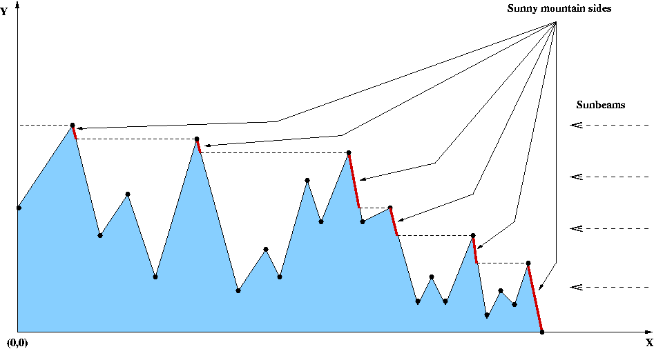

During their honeymoon, Mrs and Mr Smith went to
the Himalayas. How they were surprised when they observed that, during the
sunset, all the snow touched by the sunbeams turned red.
Such a magnificent landscape leaves everyone plenty of emotion, but Mr Smith's
number obsession overcame all this. He rapidly began evaluating distances,
which made Mrs Smith quite upset.
Your work is to help him calculate the size, in meters, of the mountainsides that became red as the sun sets. Mr Smith's honeymoon depends on you! Please be quick and efficient.
For the sake of simplicity, consider that, during the sunset, the sunbeams are horizontal and assume that the landscape is described by the set of coordinates of the mountain peaks and cols. This can be depicted by the following figure. A landscape, in this context, is then a sequence of peaks and cols (i.e., only a col follows a peak and conversely).

Note that, in this picture, the sunny mountainsides are emphasized by bold lines and the coordinates of the landscape are emphasized by bold points.
Thus, the goal of this problem is to calculate the total length in meters of the bold lines.
For this task consider that: (1) for all coordinates (x, y), 0 <=
x
<=
30000 and 0 <= y <= 8848; (2) the unit is the meter; (3)
all the X-coordinates are pair-wise distinct; (4) the leftmost point has 0 as
X-coordinate and the rightmost point has 0 as Y-coordinate; (5) The total
number of coordinates given is n <= 100.
The first line of input contains C (0 < C < 100 ), the number of test cases that follows.
Each test case starts with a line containing the number N of coordinate pairs.
The remaining N lines for each test case contain the coordinates
defining the landscape. Each of these lines contains two integers, x and y,
separated by a single space. The first integer, x, is the X-coordinate,
and the second, y, is the Y-coordinate of the considered point.
The output is formed by a sequence of lines, one for each test case. Each line contains a single real number with exactly two decimal digits. This number represents the length in meters of the sunny mountainsides for the corresponding test case.
2
11
1100 1200
0 500
1400 100
600 600
2800 0
400 1100
1700 600
1500 800
2100 300
1800 700
2400 500
2
0 1000
1000 0
1446.34
1414.21 MIUP'2004: Fourth Portuguese National
Programming Contest
Problem setter: Simão Melo de Sousa